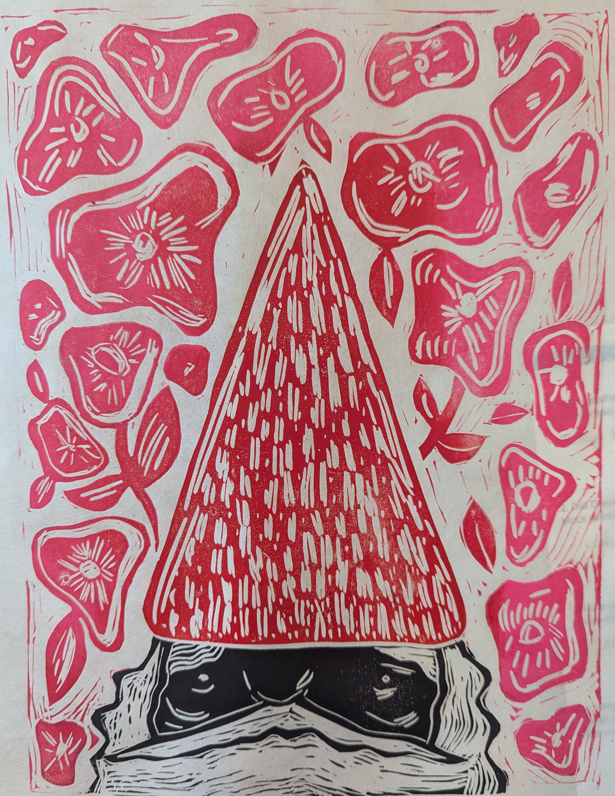

➡️ Long Term Goals for My Coding Skills
Be able to customize my work (design) and art portfolio
Feel more confident as a contributer to code discussions at work (I am a UX Designer)
Long term: be able to contribute to design systems on the front-end, not just in design files
This is some copy that will go here eventually where I talk some more about what is happening on this page.This is some copy that will go here eventually where I talk some more about what is happening on this page.This is some copy that will go here eventually where I talk some more about what is happening on this page.This is some copy that will go here eventually where I talk some more about what is happening on this page.This is some copy that will go here eventually where I talk some more about what is happening on this page.This is some copy that will go here eventually where I talk some more about what is happening on this page.This is some copy that will go here eventually where I talk some more about what is happening on this page.This is some copy that will go here eventually where I talk some more about what is happening on this page.This is some copy that will go here eventually where I talk some more about what is happening on this page.This is some copy that will go here eventually where I talk some more about what is happening on this page.This is some copy that will go here eventually where I talk some more about what is happening on this page.
